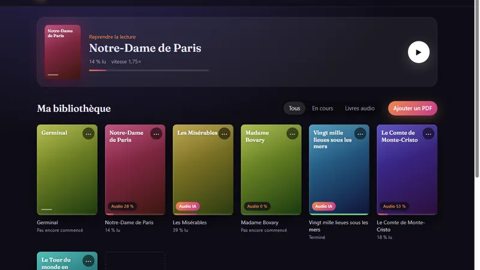

Lecteur PDF à voix haute
Une application web que j'héberge chez moi et qui transforme des livres PDF en livres audio, lus par une voix IA générée sur une carte graphique qui ne s'allume que quand on en a besoin.
- Python
- SQLite
- Docker
- Proxmox (LXC)